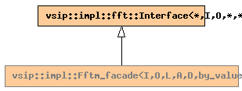

Global Namespace
Inheritance Tree
Inheritance Graph
Name Index
template <
typename
I,
typename
O,
typename
L, int
A
, int
D
, unsigned int
N
,
alg_hint_type
H
>
class
vsip
::
impl
::Fftm_facade<I,O,L,A,D,by_value,N,H>
File:
../../../vsip/core/fft.hpp
Primary template:
Fftm_facade

-
Public Class templates
template <
typename
BlockT>
typename
fft :: Result_fftm_rbo < I , O , BlockT , workspace , A , D > :: view_type
-
Returns the Fast Fourier Transform of
in
.
More...
Returns the Fast Fourier Transform of
in
.
-
Public Classes
class
vsip :: impl :: diag_detail :: Diagnose_fftm
-
Public Member functions
constructor
Fftm_facade
(const
Domain
<*>&
dom
, base::scalar_type
scale
)
-
Private Typedefs
fft::Interface
<*, I, O,
axis
,
exponent
>
base
fft::Fftm_backend
backend_type
fft::workspace
workspace
vsip_csl::dispatcher::Dispatcher
dispatcher_type
-
Private Typenames
typename
fft :: Fftm_backend < I , O , A , D >
-
Private Data members
const int
axis
= 1 - A
const int
exponent
= D == fft_fwd ? - 1 : 1
std::auto_ptr<
backend_type
>
backend_
workspace
workspace_
Generated on Sat Apr 17 11:14:06 2010 by
synopsis
(version 0.12)


 synopsis (version 0.12)
synopsis (version 0.12)